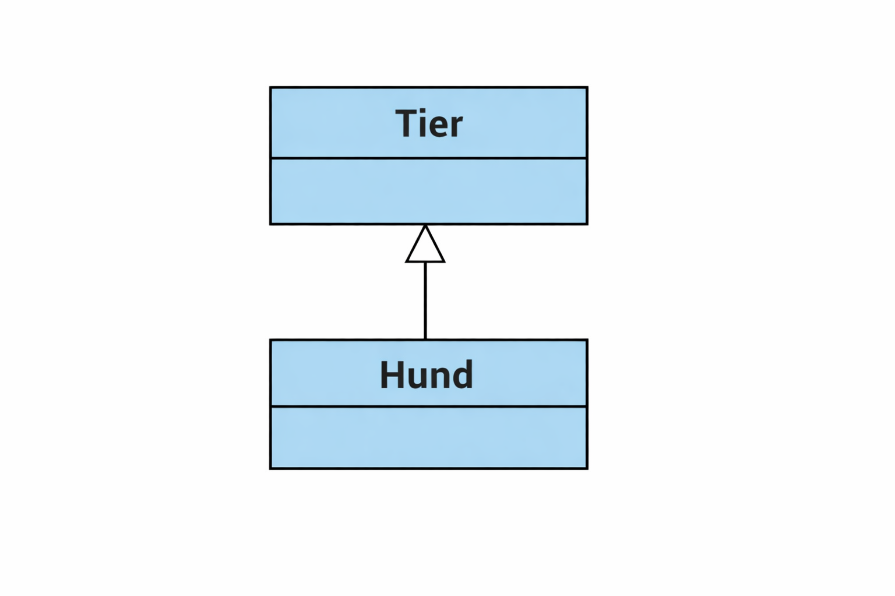

Die Vererbung ist ein zentrales Konzept der objektorientierten Programmierung (OOP). Sie ermöglicht es, gemeinsame Eigenschaften und gemeinsames Verhalten in einer Oberklasse zu definieren, damit Unterklassen diese wiederverwenden oder anpassen können.
Wenn mehrere Klassen dieselben Attribute haben, steht derselbe Code mehrmals im Programm. Vererbung löst das: Das Gemeinsame kommt einmal in eine Oberklasse, die Unterklassen erben es. Achte im Video auf den „ist-ein“-Test und darauf, welcher Konstruktor läuft, wenn die Unterklasse gar keinen eigenen hat. Neu ist isinstance, das wird kurz erklärt.
In der UML wird Vererbung durch einen Pfeil mit nicht ausgefüllter (weißer) dreieckiger Spitze dargestellt. Der Pfeil zeigt von der Unterklasse zur Oberklasse.

Vererbung ist eine Spezialisierungsbeziehung zwischen Klassen. Sie unterscheidet sich von Beziehungen zwischen Objekten wie Assoziation, Aggregation oder Komposition.
| Beziehung | Definition | Beispiel | Lebensdauer | Verbindung |
|---|---|---|---|---|
| Assoziation | Ein Objekt kennt ein anderes. | Lehrer kennt Fach | beide unabhängig | 🔹 locker |
| Aggregation | Ein Objekt enthält andere – diese leben aber eigenständig weiter. | Schulklasse enthält Schüler | Teil lebt auch ohne Ganzes | 🔸 mittel |
| Komposition | Ein Objekt besteht aus anderen – sie können nicht ohne es existieren. | Auto enthält Motor | Teil endet mit dem Ganzen | 🔴 stark |
| Vererbung | Eine Klasse ist eine Spezialisierung einer anderen. | Hund ist ein Tier |
keine Verbindung zwischen Objekten | ⚪ Klassenebene |
Passt Vererbung bei den Paaren „Kreis – Form“ und „Rad – Fahrrad“? Und was gibt isinstance(rad, Auto) für rad = Fahrrad("Diamant") aus?
„Ein Kreis ist eine Form“ stimmt, also kann Kreis von Form erben. „Ein Rad ist ein Fahrrad“ stimmt nicht – ein Fahrrad hat Räder, das ist eine Komposition, keine Vererbung. isinstance(rad, Auto) ergibt False: Fahrrad und Auto sind beide Fahrzeuge, aber ein Fahrrad ist kein Auto.
Danach: Aufgabe 4.10.1 – Klassendiagramm Musikinstrumente.
Weiter mit Schritt 2: super().__init__ Schritt für Schritt →
super().__init__ Schritt für Schritt
Eine Unterklasse erbt auch den Konstruktor der Oberklasse. Definiert sie keinen eigenen __init__, wird automatisch der Konstruktor der Oberklasse verwendet. Definiert sie einen eigenen __init__, überschreibt dieser den geerbten – dann muss der Konstruktor der Oberklasse mit super().__init__() ausdrücklich aufgerufen werden, damit auch deren Attribute gesetzt werden.
Im Video entsteht Auto("VW", 5) Zeile für Zeile. Achte auf die gelbe Zeile: Erst beginnt Auto.__init__, dann läuft Fahrzeug.__init__, dann geht es in Auto.__init__ weiter. self zeigt die ganze Zeit auf dasselbe Objekt. Am Ende zeigt vars(auto) alle Attribute des Objekts.
Zum Nachlesen steht der Code aus dem Video mit Erklärung und Testfällen in Beispiel 1:
Welcher Konstruktor läuft bei Fahrrad("Puky"), und was gibt vars(Fahrrad("Puky")) aus? Und welcher Name verweist beim Aufruf x = Auto("Opel", 3) während Fahrzeug.__init__ auf das neue Objekt – x oder self?
Fahrrad hat keinen eigenen __init__, also läuft Fahrzeug.__init__. Ausgabe: {'marke': 'Puky'}. Während Fahrzeug.__init__ läuft, verweist self auf das neue Auto-Objekt – dasselbe wie self in Auto.__init__. x verweist erst darauf, wenn der Konstruktor ganz fertig ist.
Danach: Aufgabe 4.10.2 – Unterklasse bilden, dann Aufgabe 4.10.3 – Initialisierung beschreiben.
Weiter mit Schritt 3: Überschreiben – wo sucht Python eine Methode? →
Eine Unterklasse erbt alle Methoden der Oberklasse. Sie kann:
super() die Methode der Oberklasse aufrufen und Eigenes ergänzen).Im Video siehst du alle drei Fälle mit Tier, Katze und Hund. Achte rechts auf die Klassenkästen: Rot ist die Klasse, in der Python gerade erfolglos sucht, grün die Klasse, in der die Methode gefunden wird. Python sucht immer zuerst in der Klasse des Objekts und erst dann eine Klasse weiter oben.
class Tier:
def sprich(self):
print("Ein Tier macht ein Geräusch.")
class Katze(Tier):
pass
k = Katze()
k.sprich() # Ausgabe: Ein Tier macht ein Geräusch.class Hund(Tier):
def sprich(self):
print("Der Hund bellt.")
h = Hund()
h.sprich() # Ausgabe: Der Hund bellt.
Das Überschreiben von Methoden in Unterklassen ist ein zentrales Beispiel für Polymorphie (siehe 4.11): Objekte reagieren unterschiedlich auf die gleiche Botschaft (z. B. sprich()), je nachdem, zu welcher Klasse sie gehören.
super()Private Methoden mit __name werden zwar ebenfalls vererbt, sind aber wegen der Namensumbenennung in der Unterklasse nicht unter diesem Namen aufrufbar.
Zu Tier und Hund von oben kommt class Dackel(Hund): pass. In welchen Klassen sucht Python bei Dackel().sprich() nach sprich, und was wird ausgegeben?
Zuerst in Dackel – dort steht nichts. Dann in Hund – dort wird sprich gefunden, die Suche hört auf. Ausgabe: Der Hund bellt. Tier.sprich wird nicht erreicht.
Danach: Aufgabe 4.10.4 – Code analysieren, dann Aufgabe 4.10.5 – Methode überschreiben und erweitern.
Das folgende Beispiel verbindet alle drei Schritte: Vererbung entwerfen, Konstruktoren mit super().__init__, Methoden überschreiben und erweitern.
Alltag: In einem Carsharing- oder Bikesharing-Angebot haben alle Fahrzeuge eine Nummer, einen Standort und einen Preis – E-Scooter zusätzlich einen Akkustand. Genau diese Struktur bildet eine Oberklasse Fahrzeug mit Unterklassen ab.
Beruf: Viele Frameworks funktionieren über Vererbung: In der Spieleentwicklung erben Spielfiguren von einer Klasse des Game-Engines, in Web-Frameworks wie Django erben Datenmodelle von models.Model. Entwicklerinnen und Entwickler ergänzen dann nur noch ihre speziellen Attribute und Methoden. Gleichzeitig gilt im Beruf die Regel „Komposition vor Vererbung“: Zu tiefe Vererbungshierarchien machen Software schwer wartbar.
Vererbung ist eine „ist-ein“-Beziehung zwischen Klassen: Gemeinsames steht einmal in der Oberklasse, Unterklassen erben es und ergänzen Eigenes. Hat eine Unterklasse einen eigenen Konstruktor, ruft sie mit super().__init__(…) den Konstruktor der Oberklasse für dasselbe Objekt auf. Bei einem Methodenaufruf sucht Python zuerst in der Klasse des Objekts und dann Schritt für Schritt weiter oben. So kann eine Unterklasse Methoden unverändert erben, überschreiben oder mit super() erweitern.
Vererbung: Eine „ist-ein“-Beziehung zwischen Klassen. Die Unterklasse übernimmt alle Attribute und Methoden ihrer Oberklasse und kann eigene ergänzen.
Schreibweise in Python: class Unterklasse(Oberklasse):
Überschreiben: Die Unterklasse kann eine geerbte Methode neu definieren. Für ihre Objekte wird dann diese neue Fassung ausgeführt.
Konstruktor der Unterklasse: Hat die Unterklasse einen eigenen Konstruktor, werden die Attribute der Oberklasse nur gesetzt, wenn super().__init__(…) aufgerufen wird. Ohne eigenen Konstruktor ist kein Aufruf nötig.
Zeichne ein UML-Diagramm mit folgenden Klassen: Musikinstrument (Oberklasse), Gitarre, Klavier, Schlagzeug (Unterklassen). Gib je ein bis zwei Attribute und eine Methode an.
Erstelle eine Klasse Mitarbeiter mit dem Attribut name. Leite eine Klasse Manager ab, die zusätzlich das Attribut abteilung besitzt.